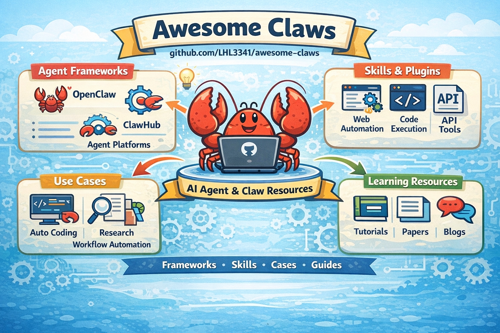

把 OpenClaw 生态，整理成一张真正能用的地图。
Awesome Claws 是一个按使用场景整理的 OpenClaw 相关产品、技能、社区与生态资源清单。 它不想做一份“名词堆砌大全”，而是想成为一个真正能帮助你发现项目、理解生态、快速上手的导航入口。

适合谁看
刚接触 OpenClaw 的人
想快速理解 OpenClaw 生态里有哪些代表项目、哪些方向已经长出来、从哪里开始看比较合适。
想做 AI Assistant / Agent 产品的人
可以从这里看到产品形态、渠道接入、工作流自动化、skills 生态与部署面板的实际案例。
科研 / Coding / Automation 实践者
如果你关心 AI 科研工作流、coding agent、自动化系统，这里会比泛 AI 列表更聚焦、更能落地。
持续跟踪生态的人
如果你想看“OpenClaw 周边最近又长出了什么”，这个仓库就是一个长期维护的观察窗口。
收录范围
优先收录
优先是产品级、可直接使用、有 README / 文档 / 安装路径 / 明确用途的项目。
默认不重点收
纯底层 framework、与 OpenClaw 关系较弱的泛 AI 项目、公开信号太弱的仓库、 只有概念没有落地的演示型项目。
第一次来，建议从这里开始
精选
快速建立整体印象，先看旗舰项目、代表产品和高价值入口。
个人助手
看 OpenClaw 风格产品主线，以及常驻型 AI Assistant 的核心形态。
学术研究
看 AI 科研工作流、论文阅读、知识管理与研究助手方向的项目。
自动化
看工具编排、工作流执行、agent-native automation 和任务系统。
项目目标
我们希望 Awesome Claws 最终成为 OpenClaw 生态里最好用的中文 / 双语导航入口之一。 当你想知道“这个生态现在到底有什么”“哪个项目值得看”“该往哪个方向扩展”时， 能第一时间想到这里。